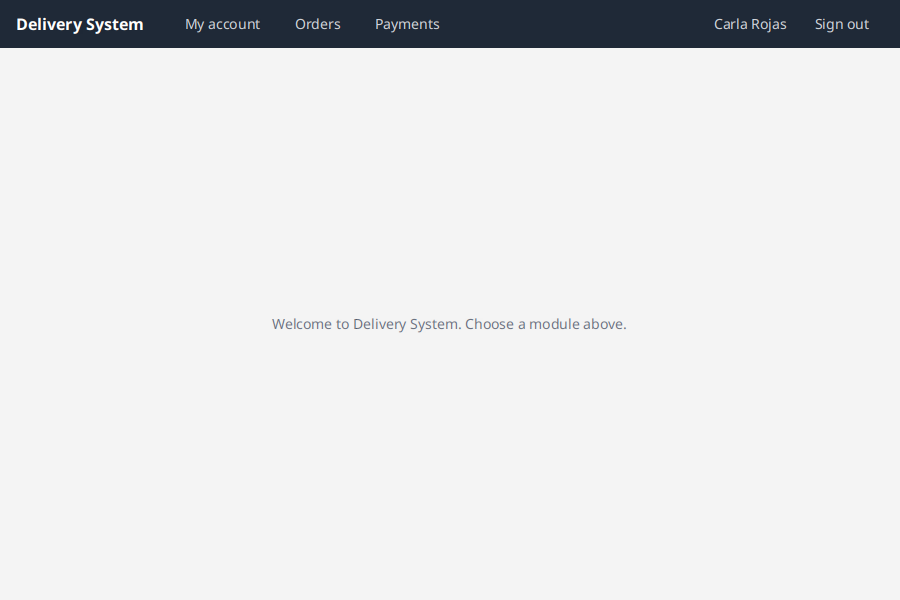
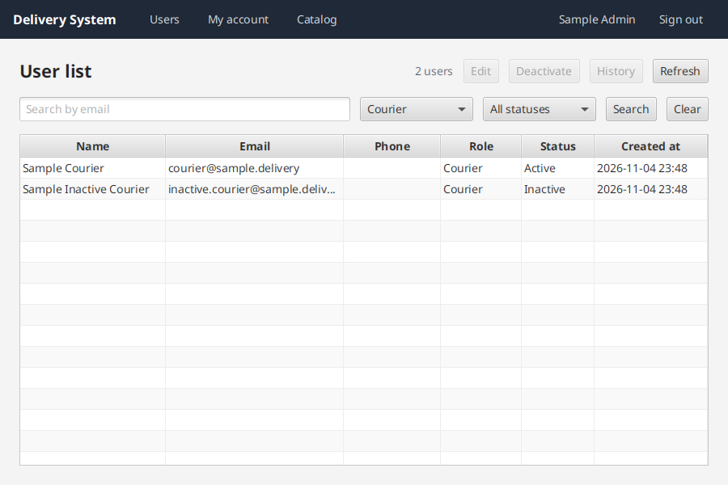
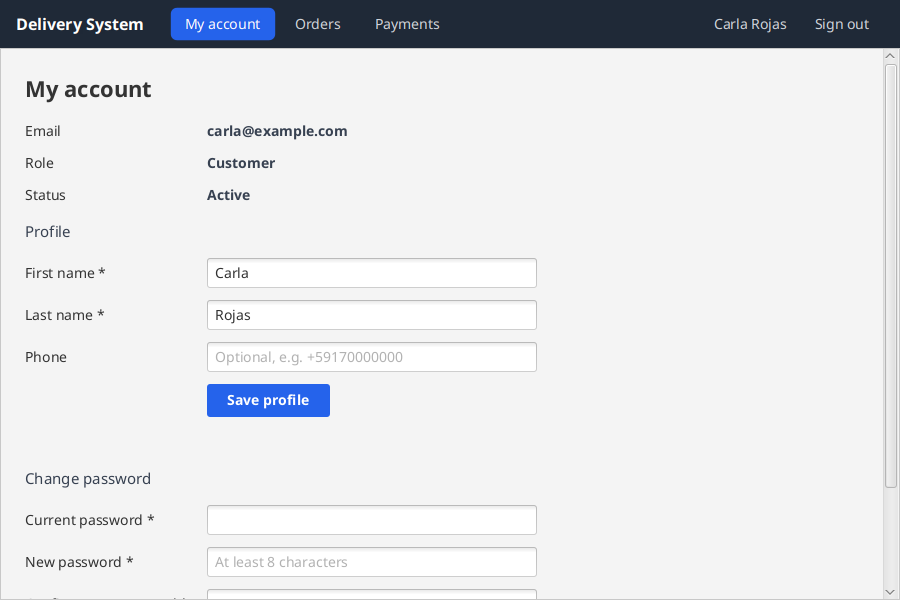
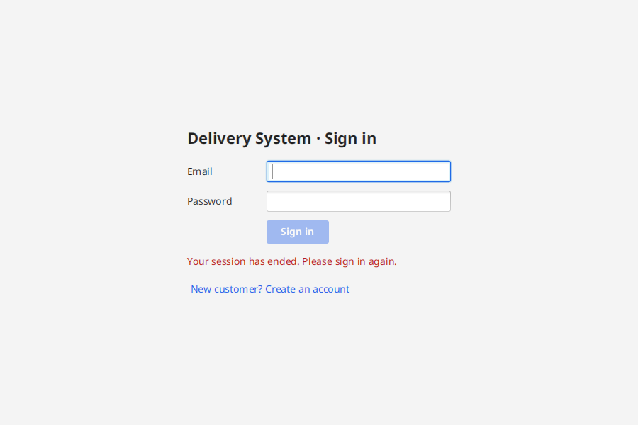

Un curso corto, para quien está aprendiendo a programar, sobre lo que se agregó a core-module y user-module y lo que debe hacer tu módulo para integrarse. Son 9 lecciones: cada una explica primero el problema, después la idea y al final el código, línea por línea. El diagrama de la izquierda muestra en qué parte de la arquitectura estás. Al final, cada equipo tiene su pestaña con los pasos y el código completo.
main (historias #85–#101). Actualiza tu rama:
git switch main && git pull --rebase origin main
git switch FEAT-<n>/feature/<tu-rama> && git rebase main
cd core-module && ./mvnw install -DskipTests && cd ../user-module && ./mvnw install -DskipTestsCurrentUserServiceisActiveWithRolefindUserTransactionRunnerBaja para empezar.
El problema. Imagina que en tu código de Pedidos escribes directamente "busca al usuario en la tabla users". El día que el equipo de Usuarios cambie esa tabla, tu módulo se rompe sin que tú hayas tocado nada.
La idea. En la arquitectura hexagonal el centro de tu módulo (la lógica de negocio) no conoce bases de datos, pantallas ni otros módulos. Solo conoce interfaces: "contratos" que dicen qué se puede pedir, sin decir cómo se hace.
Una comparación. Es como un enchufe: tu lámpara (tu módulo) no sabe si la electricidad viene de una planta solar o de una batería. Solo sabe que el enchufe tiene una forma fija. En el proyecto, los "enchufes" están en core-module.
| Capa (en el diagrama) | Qué hace | Ejemplo en el proyecto |
|---|---|---|
| Pantalla (Controller) | Lee lo que escribe el usuario y muestra resultados. No decide reglas. | LoginController, MyAccountController |
| Caso de uso | La regla de negocio: "un cliente activo puede confirmar su pedido". | ChangeUserStatusUseCase |
| Puertos | Interfaces que el caso de uso necesita (guardar, consultar). | UserRepositoryPort, TransactionRunner |
| Contratos de core | Interfaces para hablar con otro módulo. | UserService, CurrentUserService, CatalogService |
| Adaptadores | La implementación real de un puerto o contrato. | UserServiceAdapter (en user-module) |
Qué aprenderás: en las lecciones 2 a 9 vas a usar cada "enchufe" que ya está listo en main. Al final, en Código por módulo, está lo que debe hacer tu equipo, con el código completo.
En el caso de uso (o en el dominio): es una regla de negocio. La pantalla solo muestra el error.
CurrentUserServiceEl problema. Antes, muchos módulos usaban un id fijo: SampleUsers.CUSTOMER. Así, todos los pedidos parecían del mismo cliente, aunque entrara otra persona.
La solución. Preguntar al contrato CurrentUserService quién inició sesión. Lo implementa user-module con el login.
CurrentUser me = currentUserService.currentUser(); // 1
UUID customerId = me.id(); // 2
UserRole role = me.role(); // 3CurrentUser (un record: un objeto que solo guarda datos).ADMIN, MERCHANT, CUSTOMER o COURIER.currentUser() lanza NotAuthenticatedException. No la atrapes con try/catch: core la usa para volver al login (lección 7). La sesión también termina si el ADMIN desactiva al usuario o tras 30 minutos sin actividad.
SampleUsers.CUSTOMER en el pedido?Porque todos los pedidos quedarían a nombre del mismo cliente de prueba. El id debe salir de currentUser().id().
isActiveWithRoleEl problema. El menú esconde el botón "Users" a un cliente. Pero esconder un botón no es seguridad: si otro código llama al caso de uso, la regla no se cumple.
La solución. Validar dentro del caso de uso. Así lo hace user-module desde la historia #95:
if (!userService.isActiveWithRole(me.id(), UserRole.CUSTOMER)) { // 1
throw new DomainException("User not authorized for this operation"); // 2
}isActiveWithRole responde true solo si el usuario existe, está activo y tiene alguno de los roles. Puedes pasar varios: isActiveWithRole(id, UserRole.ADMIN, UserRole.MERCHANT).DomainException), que la pantalla mostrará tal cual.
UserRole.COURIER: isActiveWithRole(courierId, UserRole.COURIER).
findUser y findActiveByRoleEl problema. Entregas necesitaba el nombre y el teléfono del repartidor, y Catálogo necesitaba elegir al comerciante dueño de un comercio. Copiar esos datos en cada módulo los deja desactualizados.
La solución (#85). Guardar solo el id y pedir el resto a UserService cuando se necesita:
Optional<UserSummary> found = userService.findUser(courierId); // 1
UserSummary courier = found.orElseThrow( // 2
() -> new NotFoundException("User not found: " + courierId));
String text = courier.fullName() + " · " + courier.phoneNumber(); // 3
List<UserSummary> merchants = userService.findActiveByRole(UserRole.MERCHANT); // 4Optional significa "puede venir vacío": si el id no existe, no hay usuario.orElseThrow: "dame el usuario o lanza este error".UserSummary trae id, nombre, apellido, correo, teléfono (puede ser null), rol y si está activo. Nunca la contraseña.ComboBox.
Si guardas solo el id y usas findUser, verás el teléfono nuevo sin cambiar nada. Si lo copiaste en tu tabla, quedará viejo.
TransactionRunnerEl problema. Al confirmar un pedido se hacen varias cosas: guardar el pedido, descontar el stock y registrar el pago. Si el programa falla después de guardar el pedido pero antes del pago, queda un pedido sin pagar y el stock descontado.
Una comparación. Una transferencia bancaria: o se descuenta de una cuenta y se suma a la otra, o no pasa nada. Nunca solo la mitad. Eso es una transacción.
La solución (#96). Envolver las escrituras en transactions.inTransaction(...):
return transactions.inTransaction(() -> { // 1
Order saved = orders.save(order); // 2
catalog.reserveStock(productId, quantity); // 3
return saved.getId(); // 4
});() -> { ... } (una lambda: un bloque de código que se pasa como dato) se ejecuta como una unidad.inTransaction.-Pjpa) es una transacción real; en memoria simplemente se ejecuta.TransactionRunner?Sí: escribe dos veces. Si la segunda falla, sin transacción quedaría un pago sin pedido pagado.
La idea. El caso de uso es Java puro: no sabe de Spring. Alguien tiene que "armarlo" y pasarle sus piezas por el constructor. Eso hace la clase de configuración de tu módulo.
@Configuration // 1
public class OrderModuleConfiguration {
@Bean // 2
public ConfirmOrderUseCase confirmOrderUseCase(OrderRepositoryPort orders, CartRepositoryPort carts,
CatalogService catalog, PaymentService payments,
UserService users, CurrentUserService currentUser,
TransactionRunner transactions) { // 3
return new ConfirmOrderUseCase(orders, carts, catalog, payments, users, currentUser, transactions);
}
}@Configuration: "esta clase fabrica objetos para Spring".@Bean: el objeto que devuelve este método queda disponible para quien lo necesite, por ejemplo la pantalla.UserService lo da user-module, TransactionRunner lo da core y tus puertos los da tu propio módulo.@Component?Porque es Java puro: así se prueba con new, sin Spring. La clase @Configuration lo crea.
BackgroundTasks y la sesiónEl problema. Si la pantalla espera a la base de datos en el mismo hilo que dibuja la ventana, la ventana se congela.
La solución. BackgroundTasks.run(trabajo, siSaleBien, siFalla) ejecuta el trabajo en segundo plano y luego vuelve a la pantalla:
@FXML
void onConfirm() {
String address = addressField.getText(); // 1
form.setDisable(true); // 2
BackgroundTasks.run(
() -> confirmOrder.execute( // 3
new ConfirmOrderCommand(address, SamplePaymentMethods.CUSTOMER_CARD)),
orderId -> showMessage("Order confirmed", "success"), // 4
error -> { // 5
showMessage(ErrorMessages.of(error, "confirm the order"), "error");
form.setDisable(false);
});
}currentUserService.currentUser() fuera de BackgroundTasks.run. Si la sesión terminó, el botón "no hace nada". Este error se encontró y se corrigió en My account.
Una llamada a currentUser() fuera de BackgroundTasks.run: debe ir dentro del trabajo en segundo plano.
La idea. Para probar, todos los equipos usan los mismos ids fijos. Hoy los responden los fallbacks de core; cuando un módulo real exista, los cargará al arrancar con los mismos ids.
| Constante | Qué es |
|---|---|
SampleUsers.ADMIN / MERCHANT / CUSTOMER / COURIER | Un usuario activo por rol (contraseña en el README de user-module) |
SampleUsers.INACTIVE_CUSTOMER / INACTIVE_COURIER | Para probar que un inactivo es rechazado |
SampleCatalog.COMMERCE | "Sample Pizzeria", del comerciante de prueba |
SampleCatalog.PIZZA / EMPANADA | 50.00 con stock 10 / 8.50 agotada |
SamplePaymentMethods.CUSTOMER_CARD | Tarjeta del cliente de prueba |
FallbackCatalogService.AVAILABLE_PRODUCT, SOLD_OUT_PRODUCT y SAMPLE_COMMERCE están obsoletos: usa SampleCatalog. Pronto se eliminarán.SampleCatalog.EMPANADA (stock 0).
La idea. Una prueba unitaria debe correr rápido y sin MySQL. Reemplazas cada pieza externa por una versión simple:
| Pieza real | En la prueba usa |
|---|---|
CurrentUserService (login) | Una lambda: () -> Optional.of(new CurrentUser(SampleUsers.CUSTOMER, UserRole.CUSTOMER, "Sample Customer")) |
UserService | new FallbackUserService() (ya no se puede como lambda: tiene tres métodos) |
TransactionRunner | TransactionRunner.direct() |
CatalogService / PaymentService | new FallbackCatalogService() / new FallbackPaymentService() |
| Tu repositorio | Tu adaptador en memoria |
Escribe cada prueba en tres partes: Arrange (preparar), Act (ejecutar) y Assert (comprobar). La prueba completa de cada módulo está en su pestaña, abajo.
UserService no se puede escribir como lambda?Una lambda solo sirve para interfaces con un método. UserService tiene tres (#85); usa new FallbackUserService().
Elige tu equipo. Cada sección trae los archivos completos: comando, caso de uso, configuración, pantalla y prueba. Las clases de tu dominio (Order, Courier, Commerce, PaymentMethod…) se llaman como en tu rama: adapta los nombres, no la estructura.
SampleUsers.CUSTOMER) en NewCartController y en tus casos de uso por currentUserService.currentUser().id() (lección 2).isActiveWithRole(id, UserRole.CUSTOMER) (lección 3, INT-003).ConfirmOrderUseCase (#41): precio vigente con CatalogService, reservar stock, pedir el pago con el método (SamplePaymentMethods.CUSTOMER_CARD mientras no haya pantalla) y todo dentro de TransactionRunner (lección 5).findUser y declara el botón My commerce orders.FallbackCatalogService.AVAILABLE_PRODUCT/SOLD_OUT_PRODUCT por SampleCatalog.PIZZA/EMPANADA en código y pruebas.// paso N remite a una lección.core-module y user-module de main el 04/11/2026.Usa el Cart que ya está en main: getItems(), addProduct(productId, commerceId, quantity) y new Cart(customerId) para dejarlo vacío.
order-module/src/main/java/org/jala/edu/order/application/port/in/ConfirmOrderCommand.java
package org.jala.edu.order.application.port.in;
import java.util.UUID;
/**
* Lo que el cliente indica al confirmar su carrito: la dirección de entrega y el método de pago (#86).
*/
public record ConfirmOrderCommand(String deliveryAddress, UUID paymentMethodId) {
}order-module/src/main/java/org/jala/edu/order/domain/model/Order.java
package org.jala.edu.order.domain.model;
import java.math.BigDecimal;
import java.util.ArrayList;
import java.util.List;
import java.util.UUID;
import org.jala.edu.core.domain.exception.DomainException;
import org.jala.edu.core.domain.model.BaseModel;
/**
* Un pedido (ORD FUN-002): las líneas guardan nombre y precio del momento de la compra, y el total suma el envío.
* Solo muestra los estados que usa la confirmación; la máquina de estados completa es FUN-003.
*/
public class Order extends BaseModel<UUID> {
public enum Status { CREATED, CONFIRMED, CANCELLED }
/** Una línea del pedido, con el precio vigente que dio el catálogo (INT-001). */
public record Line(UUID productId, String name, BigDecimal unitPrice, int quantity) {
public BigDecimal subtotal() {
return unitPrice.multiply(BigDecimal.valueOf(quantity));
}
}
private final UUID customerId;
private final String deliveryAddress;
private final List<Line> lines = new ArrayList<>();
private Status status = Status.CREATED;
private String paymentReference;
private String cancelReason;
private Order(UUID customerId, String deliveryAddress) {
super(UUID.randomUUID(), now(), now());
this.customerId = customerId;
this.deliveryAddress = deliveryAddress;
}
public static Order create(UUID customerId, String deliveryAddress) {
if (deliveryAddress == null || deliveryAddress.isBlank()) {
throw new DomainException("The delivery address is required");
}
return new Order(customerId, deliveryAddress.strip());
}
public void addLine(UUID productId, String name, BigDecimal unitPrice, int quantity) {
lines.add(new Line(productId, name, unitPrice, quantity));
touch();
}
/** Subtotal de las líneas más el costo de envío fijo (ORD FUN-002). */
public BigDecimal total() {
return lines.stream().map(Line::subtotal).reduce(BigDecimal.ZERO, BigDecimal::add).add(Cart.SHIPPING_COST);
}
public void confirm(String paymentReference) {
this.status = Status.CONFIRMED;
this.paymentReference = paymentReference;
touch();
}
public void cancel(String reason) {
this.status = Status.CANCELLED;
this.cancelReason = reason;
touch();
}
public UUID getCustomerId() { return customerId; }
public String getDeliveryAddress() { return deliveryAddress; }
public List<Line> getLines() { return List.copyOf(lines); }
public Status getStatus() { return status; }
public String getPaymentReference() { return paymentReference; }
public String getCancelReason() { return cancelReason; }
}order-module/src/main/java/org/jala/edu/order/application/port/out/OrderRepositoryPort.java
package org.jala.edu.order.application.port.out;
import java.util.UUID;
import org.jala.edu.core.application.port.out.CrudRepositoryPort;
import org.jala.edu.order.domain.model.Order;
/**
* Dónde se guardan los pedidos. Hereda save, findById, findAll, existsById y deleteById de core.
*/
public interface OrderRepositoryPort extends CrudRepositoryPort<Order, UUID> {
}order-module/src/main/java/org/jala/edu/order/infrastructure/adapter/out/persistence/memory/InMemoryOrderRepositoryAdapter.java
package org.jala.edu.order.infrastructure.adapter.out.persistence.memory;
import java.util.UUID;
import org.jala.edu.core.infrastructure.config.ConditionalOnInMemoryPersistence;
import org.jala.edu.core.infrastructure.persistence.memory.InMemoryCrudRepository;
import org.jala.edu.order.application.port.out.OrderRepositoryPort;
import org.jala.edu.order.domain.model.Order;
import org.springframework.stereotype.Component;
/**
* Pedidos en memoria: InMemoryCrudRepository de core ya implementa todo el CRUD.
*/
@Component
@ConditionalOnInMemoryPersistence
public class InMemoryOrderRepositoryAdapter extends InMemoryCrudRepository<Order, UUID> implements OrderRepositoryPort {
}order-module/src/main/java/org/jala/edu/order/application/usecase/ConfirmOrderUseCase.java
package org.jala.edu.order.application.usecase;
import java.util.List;
import java.util.UUID;
import org.jala.edu.core.application.port.out.TransactionRunner;
import org.jala.edu.core.application.usecase.UseCase;
import org.jala.edu.core.contract.CatalogService;
import org.jala.edu.core.contract.CurrentUserService;
import org.jala.edu.core.contract.PaymentResult;
import org.jala.edu.core.contract.PaymentService;
import org.jala.edu.core.contract.ProductInfo;
import org.jala.edu.core.contract.UserRole;
import org.jala.edu.core.contract.UserService;
import org.jala.edu.core.domain.exception.ConflictException;
import org.jala.edu.core.domain.exception.DomainException;
import org.jala.edu.order.application.port.in.ConfirmOrderCommand;
import org.jala.edu.order.application.port.out.CartRepositoryPort;
import org.jala.edu.order.application.port.out.OrderRepositoryPort;
import org.jala.edu.order.domain.model.Cart;
import org.jala.edu.order.domain.model.CartItem;
import org.jala.edu.order.domain.model.Order;
/**
* ORD FUN-002 + INT-001..003: convierte el carrito del cliente en un pedido, reserva el stock y pide el pago.
*/
public class ConfirmOrderUseCase implements UseCase<ConfirmOrderCommand, UUID> {
private final OrderRepositoryPort orders;
private final CartRepositoryPort carts;
private final CatalogService catalog;
private final PaymentService payments;
private final UserService users;
private final CurrentUserService currentUser;
private final TransactionRunner transactions;
public ConfirmOrderUseCase(OrderRepositoryPort orders, CartRepositoryPort carts, CatalogService catalog,
PaymentService payments, UserService users, CurrentUserService currentUser,
TransactionRunner transactions) {
this.orders = orders;
this.carts = carts;
this.catalog = catalog;
this.payments = payments;
this.users = users;
this.currentUser = currentUser;
this.transactions = transactions;
}
@Override
public UUID execute(ConfirmOrderCommand command) {
UUID customerId = currentUser.currentUser().id(); // lección 2
if (!users.isActiveWithRole(customerId, UserRole.CUSTOMER)) { // lección 3 (INT-003)
throw new DomainException("User not authorized for this operation");
}
List<CartItem> items = carts.findOrCreate(customerId).getItems();
if (items.isEmpty()) {
throw new DomainException("The cart is empty");
}
return transactions.inTransaction(() -> { // lección 5
Order order = Order.create(customerId, command.deliveryAddress());
for (CartItem item : items) {
ProductInfo product = catalog.findProduct(item.getProductId()) // INT-001: precio vigente
.orElseThrow(() -> new ConflictException("Product not found: " + item.getProductId()));
catalog.reserveStock(item.getProductId(), item.getQuantity()); // D-09: sin stock → excepción
order.addLine(product.productId(), product.name(), product.price(), item.getQuantity());
}
PaymentResult payment = payments.pay(order.getId(), customerId, // INT-002, con método (#86)
command.paymentMethodId(), order.total());
if (payment.approved()) {
order.confirm(payment.paymentReference());
carts.save(new Cart(customerId)); // el carrito queda vacío
} else {
order.cancel("Payment rejected: " + payment.reason());
items.forEach(item -> catalog.releaseStock(item.getProductId(), item.getQuantity()));
}
return orders.save(order).getId();
});
}
}order-module/src/test/java/org/jala/edu/order/application/usecase/ConfirmOrderUseCaseTest.java
package org.jala.edu.order.application.usecase;
import static org.assertj.core.api.Assertions.assertThat;
import static org.assertj.core.api.Assertions.catchThrowable;
import java.util.Optional;
import java.util.UUID;
import org.jala.edu.core.application.port.out.TransactionRunner;
import org.jala.edu.core.contract.CurrentUser;
import org.jala.edu.core.contract.CurrentUserService;
import org.jala.edu.core.contract.SampleCatalog;
import org.jala.edu.core.contract.SamplePaymentMethods;
import org.jala.edu.core.contract.SampleUsers;
import org.jala.edu.core.contract.UserRole;
import org.jala.edu.core.domain.exception.DomainException;
import org.jala.edu.core.infrastructure.contract.FallbackCatalogService;
import org.jala.edu.core.infrastructure.contract.FallbackPaymentService;
import org.jala.edu.core.infrastructure.contract.FallbackUserService;
import org.jala.edu.order.application.port.in.ConfirmOrderCommand;
import org.jala.edu.order.domain.model.Cart;
import org.jala.edu.order.domain.model.Order;
import org.jala.edu.order.infrastructure.adapter.out.persistence.memory.InMemoryCartRepositoryAdapter;
import org.jala.edu.order.infrastructure.adapter.out.persistence.memory.InMemoryOrderRepositoryAdapter;
import org.junit.jupiter.api.Test;
class ConfirmOrderUseCaseTest {
private static final CurrentUserService AS_CUSTOMER = signedInAs(SampleUsers.CUSTOMER);
private final InMemoryOrderRepositoryAdapter orders = new InMemoryOrderRepositoryAdapter();
private final InMemoryCartRepositoryAdapter carts = new InMemoryCartRepositoryAdapter();
private final FallbackCatalogService catalog = new FallbackCatalogService();
@Test
void confirmsAPaidOrderAndReservesTheStock() {
// Arrange: el cliente de prueba tiene 2 pizzas en su carrito
putPizzasInTheCart(SampleUsers.CUSTOMER, 2);
ConfirmOrderUseCase confirm = useCase(AS_CUSTOMER);
// Act
UUID orderId = confirm.execute(new ConfirmOrderCommand("Av. Siempre Viva 742",
SamplePaymentMethods.CUSTOMER_CARD));
// Assert: pedido confirmado, carrito vacío y quedan 8 pizzas (10 - 2)
Order order = orders.findById(orderId).orElseThrow();
assertThat(order.getStatus()).isEqualTo(Order.Status.CONFIRMED);
assertThat(order.total()).isEqualByComparingTo("110.00");
assertThat(carts.findOrCreate(SampleUsers.CUSTOMER).getItems()).isEmpty();
assertThat(catalog.isAvailable(SampleCatalog.PIZZA, 8)).isTrue();
assertThat(catalog.isAvailable(SampleCatalog.PIZZA, 9)).isFalse();
}
@Test
void aRejectedPaymentCancelsTheOrderAndReleasesTheStock() {
// Arrange: 10 pizzas = 510.00, y sin método de pago el respaldo rechaza
putPizzasInTheCart(SampleUsers.CUSTOMER, 10);
ConfirmOrderUseCase confirm = useCase(AS_CUSTOMER);
// Act
UUID orderId = confirm.execute(new ConfirmOrderCommand("Av. Siempre Viva 742", null));
// Assert
assertThat(orders.findById(orderId).orElseThrow().getStatus()).isEqualTo(Order.Status.CANCELLED);
assertThat(catalog.isAvailable(SampleCatalog.PIZZA, SampleCatalog.PIZZA_STOCK)).isTrue();
}
@Test
void anInactiveCustomerCannotConfirm() {
// Arrange
putPizzasInTheCart(SampleUsers.INACTIVE_CUSTOMER, 1);
ConfirmOrderUseCase confirm = useCase(signedInAs(SampleUsers.INACTIVE_CUSTOMER));
// Act
Throwable thrown = catchThrowable(() -> confirm.execute(
new ConfirmOrderCommand("Calle 1", SamplePaymentMethods.CUSTOMER_CARD)));
// Assert
assertThat(thrown).isInstanceOf(DomainException.class).hasMessage("User not authorized for this operation");
assertThat(orders.findAll()).isEmpty();
}
private ConfirmOrderUseCase useCase(CurrentUserService currentUser) {
return new ConfirmOrderUseCase(orders, carts, catalog, new FallbackPaymentService(),
new FallbackUserService(), currentUser, TransactionRunner.direct());
}
private void putPizzasInTheCart(UUID customerId, int quantity) {
Cart cart = carts.findOrCreate(customerId);
cart.addProduct(SampleCatalog.PIZZA, SampleCatalog.COMMERCE, quantity);
carts.save(cart);
}
private static CurrentUserService signedInAs(UUID userId) {
return () -> Optional.of(new CurrentUser(userId, UserRole.CUSTOMER, "Sample Customer"));
}
}Fragmento para adaptar: depende de cómo guarden los pedidos por comercio.
// En el caso de uso que lista los pedidos del comercio del MERCHANT
UUID merchantId = currentUser.currentUser().id();
List<UUID> myCommerces = catalog.findCommerceIdsByMerchant(merchantId);
return orders.findReadyOrConfirmedByCommerces(myCommerces).stream()
.map(order -> new CommerceOrderRow(order.getId(), order.total(),
users.findUser(order.customerId()).map(UserSummary::fullName).orElse("—")))
.toList();El botón se llama exactamente My commerce orders (@Order(310), #79).
findActiveByRole(UserRole.COURIER)) y guarda solo su id, transporte y disponibilidad (lección 4).isActiveWithRole(courierId, UserRole.COURIER) antes de registrar, tomar o avanzar una entrega (INT-002). Prueba con SampleUsers.INACTIVE_COURIER.currentUser().id()) en el historial y al tomar pedidos, nunca un campo de texto con el id (lección 2).OrderService dentro de TransactionRunner (lección 5).OrderService.// paso N remite a una lección.core-module y user-module de main el 04/11/2026.Usa la clase Courier que ya está en main (Courier.register(name, phone, transportMode)): el nombre y el teléfono ahora vienen de user-module. El teléfono es obligatorio para un repartidor; si su cuenta no tiene, el caso de uso lo dice.
delivery-module/src/main/java/org/jala/edu/delivery/application/port/in/RegisterCourierCommand.java
package org.jala.edu.delivery.application.port.in;
import java.util.UUID;
import org.jala.edu.delivery.domain.model.TransportMode;
/**
* El ADMIN elige a un usuario COURIER de la lista y su medio de transporte; el nombre y el teléfono se leen de
* user-module (#85), no se escriben de nuevo.
*/
public record RegisterCourierCommand(UUID courierUserId, TransportMode transportMode) {
}delivery-module/src/main/java/org/jala/edu/delivery/application/usecase/RegisterCourierUseCase.java
package org.jala.edu.delivery.application.usecase;
import org.jala.edu.core.application.usecase.UseCase;
import org.jala.edu.core.contract.CurrentUserService;
import org.jala.edu.core.contract.UserRole;
import org.jala.edu.core.contract.UserService;
import org.jala.edu.core.contract.UserSummary;
import org.jala.edu.core.domain.exception.DomainException;
import org.jala.edu.core.domain.exception.NotFoundException;
import org.jala.edu.delivery.application.port.in.RegisterCourierCommand;
import org.jala.edu.delivery.application.port.out.CourierRepositoryPort;
import org.jala.edu.delivery.domain.model.Courier;
/**
* DEL FUN-001 + INT-002: el ADMIN de la sesión registra a un usuario COURIER activo como repartidor.
*/
public class RegisterCourierUseCase implements UseCase<RegisterCourierCommand, Courier> {
private final CourierRepositoryPort couriers;
private final UserService users;
private final CurrentUserService currentUser;
public RegisterCourierUseCase(CourierRepositoryPort couriers, UserService users,
CurrentUserService currentUser) {
this.couriers = couriers;
this.users = users;
this.currentUser = currentUser;
}
@Override
public Courier execute(RegisterCourierCommand command) {
if (!users.isActiveWithRole(currentUser.currentUser().id(), UserRole.ADMIN)) { // lecciones 2 y 3
throw new DomainException("User not authorized for this operation");
}
if (!users.isActiveWithRole(command.courierUserId(), UserRole.COURIER)) { // INT-002
throw new DomainException("The user is not an active courier");
}
UserSummary user = users.findUser(command.courierUserId()) // lección 4
.orElseThrow(() -> new NotFoundException("User not found: " + command.courierUserId()));
if (user.phoneNumber() == null) {
throw new DomainException("The courier needs a phone number in their user account");
}
Courier courier = Courier.register(user.fullName(), user.phoneNumber(), command.transportMode());
return couriers.save(courier);
}
}delivery-module/src/test/java/org/jala/edu/delivery/application/usecase/RegisterCourierUseCaseTest.java
package org.jala.edu.delivery.application.usecase;
import static org.assertj.core.api.Assertions.assertThat;
import static org.assertj.core.api.Assertions.catchThrowable;
import java.util.List;
import java.util.Optional;
import java.util.UUID;
import org.jala.edu.core.contract.CurrentUser;
import org.jala.edu.core.contract.CurrentUserService;
import org.jala.edu.core.contract.SampleUsers;
import org.jala.edu.core.contract.UserRole;
import org.jala.edu.core.contract.UserService;
import org.jala.edu.core.contract.UserSummary;
import org.jala.edu.core.domain.exception.DomainException;
import org.jala.edu.core.infrastructure.contract.FallbackUserService;
import org.jala.edu.delivery.application.port.in.RegisterCourierCommand;
import org.jala.edu.delivery.domain.model.Courier;
import org.jala.edu.delivery.domain.model.TransportMode;
import org.jala.edu.delivery.infrastructure.adapter.out.persistence.memory.InMemoryCourierRepositoryAdapter;
import org.junit.jupiter.api.Test;
class RegisterCourierUseCaseTest {
private static final CurrentUserService AS_ADMIN = () -> Optional.of(
new CurrentUser(SampleUsers.ADMIN, UserRole.ADMIN, "Sample Admin"));
/** El respaldo de core, pero con teléfono para el repartidor de prueba. */
private final UserService users = new FallbackUserService() {
@Override
public Optional<UserSummary> findUser(UUID userId) {
return super.findUser(userId).map(u -> new UserSummary(u.id(), u.firstName(), u.lastName(), u.email(),
"+59171234567", u.role(), u.active()));
}
};
private final InMemoryCourierRepositoryAdapter couriers = new InMemoryCourierRepositoryAdapter();
@Test
void registersTheChosenCourierWithTheDataOfTheirAccount() {
// Arrange
RegisterCourierUseCase register = new RegisterCourierUseCase(couriers, users, AS_ADMIN);
// Act
Courier courier = register.execute(new RegisterCourierCommand(SampleUsers.COURIER, TransportMode.BICYCLE));
// Assert
assertThat(courier.getName()).isEqualTo("Sample Courier");
assertThat(courier.getPhoneNumber()).isEqualTo("+59171234567");
assertThat(couriers.findAll()).hasSize(1);
}
@Test
void rejectsAnInactiveCourier() {
// Arrange
RegisterCourierUseCase register = new RegisterCourierUseCase(couriers, users, AS_ADMIN);
// Act
Throwable thrown = catchThrowable(() -> register.execute(
new RegisterCourierCommand(SampleUsers.INACTIVE_COURIER, TransportMode.BICYCLE)));
// Assert
assertThat(thrown).isInstanceOf(DomainException.class).hasMessage("The user is not an active courier");
assertThat(couriers.findAll()).isEmpty();
}
@Test
void theCourierListComesFromUserModule() {
// Act
List<UserSummary> active = users.findActiveByRole(UserRole.COURIER);
// Assert: el repartidor inactivo no aparece en la lista
assertThat(active).extracting(UserSummary::id).containsExactly(SampleUsers.COURIER);
}
}Fragmento para adaptar: Delivery es la entidad de su historia #24.
public UUID execute(UUID orderId) {
UUID courierId = currentUser.currentUser().id();
if (!users.isActiveWithRole(courierId, UserRole.COURIER)) {
throw new DomainException("User not authorized for this operation");
}
return transactions.inTransaction(() -> {
Delivery delivery = Delivery.take(orderId, courierId); // estado Asignada (D-01)
deliveries.save(delivery);
orders.assign(orderId, courierId); // OrderService: si otro lo tomó, excepción → rollback
return delivery.getId();
});
}"Retirado" es un estado interno de Entregas (D-01 = C): no se informa a OrderService. Prueba el rechazo con SampleUsers.INACTIVE_COURIER.
findActiveByRole(UserRole.MERCHANT)) y validas que sea MERCHANT activo (lección 4).CatalogService con un adaptador (CatalogServiceAdapter): así Pedidos y Entregas dejan de usar el respaldo de core.SampleCatalog al arrancar con sus mismos ids (SampleCatalogLoader), para que las pruebas de los otros equipos sigan funcionando (lección 8).TransactionRunner (lección 5).FallbackCatalogService.SAMPLE_COMMERCE por SampleCatalog.COMMERCE en tus controladores y pruebas (comentado en !14–!23).// paso N remite a una lección.core-module y user-module de main el 04/11/2026.Métodos que tus clases deben tener para este código (adáptalo a tus nombres): Commerce.register(name, address, phone, merchantId), Commerce.restoreActive(id, …), getMerchantId(), isActive(); Product.restore(id, commerceId, name, price, stock), getStock(), isAvailable(), reserve(n) (lanza ConflictException si no alcanza), release(n); CommerceRepositoryPort.isActive(id) y findByMerchantId(id).
catalog-module/src/main/java/org/jala/edu/catalog/application/port/in/RegisterCommerceCommand.java
package org.jala.edu.catalog.application.port.in;
import java.util.UUID;
/**
* Datos de un comercio nuevo (CAT FUN-001). {@code merchantId} es el MERCHANT que el ADMIN eligió de la lista.
*/
public record RegisterCommerceCommand(String name, String address, String phone, UUID merchantId) {
}catalog-module/src/main/java/org/jala/edu/catalog/application/usecase/RegisterCommerceUseCase.java
package org.jala.edu.catalog.application.usecase;
import java.util.UUID;
import org.jala.edu.catalog.application.port.in.RegisterCommerceCommand;
import org.jala.edu.catalog.application.port.out.CommerceRepositoryPort;
import org.jala.edu.catalog.domain.model.Commerce;
import org.jala.edu.core.application.usecase.UseCase;
import org.jala.edu.core.contract.CurrentUserService;
import org.jala.edu.core.contract.UserRole;
import org.jala.edu.core.contract.UserService;
import org.jala.edu.core.domain.exception.DomainException;
/**
* CAT FUN-001 + INT-002: el ADMIN registra un comercio Deshabilitado para un MERCHANT activo.
*/
public class RegisterCommerceUseCase implements UseCase<RegisterCommerceCommand, UUID> {
private final CommerceRepositoryPort commerces;
private final UserService users;
private final CurrentUserService currentUser;
public RegisterCommerceUseCase(CommerceRepositoryPort commerces, UserService users,
CurrentUserService currentUser) {
this.commerces = commerces;
this.users = users;
this.currentUser = currentUser;
}
@Override
public UUID execute(RegisterCommerceCommand command) {
if (!users.isActiveWithRole(currentUser.currentUser().id(), UserRole.ADMIN)) { // lecciones 2 y 3
throw new DomainException("User not authorized for this operation");
}
if (!users.isActiveWithRole(command.merchantId(), UserRole.MERCHANT)) {
throw new DomainException("The owner must be an active merchant");
}
Commerce commerce = Commerce.register(command.name(), command.address(), command.phone(),
command.merchantId()); // nace Deshabilitado
return commerces.save(commerce).getId();
}
}catalog-module/src/main/java/org/jala/edu/catalog/infrastructure/adapter/in/contract/CatalogServiceAdapter.java
package org.jala.edu.catalog.infrastructure.adapter.in.contract;
import java.util.List;
import java.util.Optional;
import java.util.UUID;
import org.jala.edu.catalog.application.port.out.CommerceRepositoryPort;
import org.jala.edu.catalog.application.port.out.ProductRepositoryPort;
import org.jala.edu.catalog.domain.model.Commerce;
import org.jala.edu.catalog.domain.model.Product;
import org.jala.edu.core.contract.CatalogService;
import org.jala.edu.core.contract.ProductInfo;
import org.jala.edu.core.domain.exception.NotFoundException;
/**
* Sirve el contrato de core a Pedidos y Entregas; al registrarlo como @Bean reemplaza a FallbackCatalogService.
*/
public class CatalogServiceAdapter implements CatalogService {
private final ProductRepositoryPort products;
private final CommerceRepositoryPort commerces;
public CatalogServiceAdapter(ProductRepositoryPort products, CommerceRepositoryPort commerces) {
this.products = products;
this.commerces = commerces;
}
@Override
public Optional<ProductInfo> findProduct(UUID productId) {
return products.findById(productId)
.map(p -> new ProductInfo(p.getId(), p.getCommerceId(), p.getName(), p.getPrice()));
}
@Override
public boolean isAvailable(UUID productId, int quantity) {
return products.findById(productId)
.filter(p -> p.isAvailable() && commerces.isActive(p.getCommerceId()))
.map(p -> quantity > 0 && p.getStock() >= quantity)
.orElse(false);
}
@Override
public void reserveStock(UUID productId, int quantity) { // corre dentro de la transacción de quien llama
Product product = requireProduct(productId);
product.reserve(quantity); // ConflictException si no alcanza
products.save(product);
}
@Override
public void releaseStock(UUID productId, int quantity) {
Product product = requireProduct(productId);
product.release(quantity);
products.save(product);
}
@Override
public List<UUID> findCommerceIdsByMerchant(UUID merchantId) { // D-08
return commerces.findByMerchantId(merchantId).stream().map(Commerce::getId).toList();
}
private Product requireProduct(UUID productId) {
return products.findById(productId)
.orElseThrow(() -> new NotFoundException("Product not found: " + productId));
}
}catalog-module/src/main/java/org/jala/edu/catalog/infrastructure/config/SampleCatalogLoader.java
package org.jala.edu.catalog.infrastructure.config;
import org.jala.edu.catalog.application.port.out.CommerceRepositoryPort;
import org.jala.edu.catalog.application.port.out.ProductRepositoryPort;
import org.jala.edu.catalog.domain.model.Commerce;
import org.jala.edu.catalog.domain.model.Product;
import org.jala.edu.core.contract.SampleCatalog;
import org.jala.edu.core.contract.SampleUsers;
import org.springframework.boot.ApplicationArguments;
import org.springframework.boot.ApplicationRunner;
/**
* Guarda el SampleCatalog al arrancar con sus ids fijos (#87), como SampleUsersLoader en user-module.
* Si ya existen, no los toca.
*/
public class SampleCatalogLoader implements ApplicationRunner {
private final CommerceRepositoryPort commerces;
private final ProductRepositoryPort products;
public SampleCatalogLoader(CommerceRepositoryPort commerces, ProductRepositoryPort products) {
this.commerces = commerces;
this.products = products;
}
@Override
public void run(ApplicationArguments args) {
load();
}
void load() {
if (!commerces.existsById(SampleCatalog.COMMERCE)) {
commerces.save(Commerce.restoreActive(SampleCatalog.COMMERCE, SampleCatalog.COMMERCE_NAME,
"Calle de Prueba 1", null, SampleUsers.MERCHANT));
}
if (!products.existsById(SampleCatalog.PIZZA)) {
products.save(Product.restore(SampleCatalog.PIZZA, SampleCatalog.COMMERCE, SampleCatalog.PIZZA_NAME,
SampleCatalog.PIZZA_PRICE, SampleCatalog.PIZZA_STOCK));
}
if (!products.existsById(SampleCatalog.EMPANADA)) {
products.save(Product.restore(SampleCatalog.EMPANADA, SampleCatalog.COMMERCE,
SampleCatalog.EMPANADA_NAME, SampleCatalog.EMPANADA_PRICE, 0));
}
}
}Registra CatalogServiceAdapter y SampleCatalogLoader como @Bean en tu configuración: el aviso "No module provides CatalogService" desaparece. Habilitar un comercio (FUN-004) va en transactions.inTransaction.
UserService propio y el adaptador que devuelve true: usa el de core (lección 3).PaymentService.pay(orderId, userId, paymentMethodId, amount) con PaymentServiceAdapter: valida que el método exista y sea del usuario.TransactionRunner (FUN-003, lección 5).SamplePaymentMethods.CUSTOMER_CARD al arrancar como tarjeta de SampleUsers.CUSTOMER, para que Pedidos pueda pagar en la demo.application/port/out y agrega la migración Flyway de pay_payment_methods (guía Persistencia JPA).// paso N remite a una lección.core-module y user-module de main el 04/11/2026.Métodos que tus clases deben tener: PaymentMethod.restore(id, userId, type, alias) y belongsTo(userId); PaymentTransaction.approved(…) / rejected(…, reason), getReference(), isApproved(), getReason(); PaymentHistoryPort.existsApprovedForOrder(orderId).
payment-module/src/main/java/org/jala/edu/payment/application/port/in/ProcessPaymentCommand.java
package org.jala.edu.payment.application.port.in;
import java.math.BigDecimal;
import java.util.UUID;
/**
* Un pedido de pago tal como llega por PaymentService.pay (#86).
*/
public record ProcessPaymentCommand(UUID orderId, UUID userId, UUID paymentMethodId, BigDecimal amount) {
}payment-module/src/main/java/org/jala/edu/payment/application/usecase/ProcessPaymentUseCase.java
package org.jala.edu.payment.application.usecase;
import java.math.BigDecimal;
import org.jala.edu.core.application.port.out.TransactionRunner;
import org.jala.edu.core.application.usecase.UseCase;
import org.jala.edu.core.contract.UserRole;
import org.jala.edu.core.contract.UserService;
import org.jala.edu.core.domain.exception.ConflictException;
import org.jala.edu.payment.application.port.in.ProcessPaymentCommand;
import org.jala.edu.payment.application.port.out.PaymentHistoryPort;
import org.jala.edu.payment.application.port.out.PaymentMethodRepositoryPort;
import org.jala.edu.payment.domain.model.PaymentTransaction;
/**
* PAY FUN-002 + FUN-003 + INT-002: valida usuario y método, aplica la regla y registra cada intento, sin cobrar dos
* veces el mismo pedido.
*/
public class ProcessPaymentUseCase implements UseCase<ProcessPaymentCommand, PaymentTransaction> {
/** Regla simple y documentada (FUN-002): se aprueban montos mayores que cero hasta este máximo. */
public static final BigDecimal MAX_AMOUNT = new BigDecimal("1000.00");
private final PaymentMethodRepositoryPort methods;
private final PaymentHistoryPort history;
private final UserService users;
private final TransactionRunner transactions;
public ProcessPaymentUseCase(PaymentMethodRepositoryPort methods, PaymentHistoryPort history, UserService users,
TransactionRunner transactions) {
this.methods = methods;
this.history = history;
this.users = users;
this.transactions = transactions;
}
@Override
public PaymentTransaction execute(ProcessPaymentCommand command) {
return transactions.inTransaction(() -> { // lección 5
if (history.existsApprovedForOrder(command.orderId())) { // FUN-003: sin doble cobro
throw new ConflictException("Order already paid: " + command.orderId());
}
return history.save(evaluate(command)); // se registra también el rechazo
});
}
private PaymentTransaction evaluate(ProcessPaymentCommand c) {
if (!users.isActiveWithRole(c.userId(), UserRole.values())) { // INT-002: cualquier rol activo
return PaymentTransaction.rejected(c.orderId(), c.userId(), c.amount(), "User not authorized");
}
boolean ownMethod = c.paymentMethodId() != null && methods.findById(c.paymentMethodId())
.filter(method -> method.belongsTo(c.userId())).isPresent();
if (!ownMethod) {
return PaymentTransaction.rejected(c.orderId(), c.userId(), c.amount(), "Payment method not found");
}
if (c.amount() == null || c.amount().signum() <= 0) {
return PaymentTransaction.rejected(c.orderId(), c.userId(), c.amount(), "Amount must be greater than zero");
}
if (c.amount().compareTo(MAX_AMOUNT) > 0) {
return PaymentTransaction.rejected(c.orderId(), c.userId(), c.amount(), "Amount exceeds " + MAX_AMOUNT);
}
return PaymentTransaction.approved(c.orderId(), c.userId(), c.amount());
}
}payment-module/src/main/java/org/jala/edu/payment/infrastructure/adapter/in/contract/PaymentServiceAdapter.java
package org.jala.edu.payment.infrastructure.adapter.in.contract;
import java.math.BigDecimal;
import java.util.UUID;
import org.jala.edu.core.contract.PaymentResult;
import org.jala.edu.core.contract.PaymentService;
import org.jala.edu.payment.application.port.in.ProcessPaymentCommand;
import org.jala.edu.payment.application.usecase.ProcessPaymentUseCase;
import org.jala.edu.payment.domain.model.PaymentTransaction;
/**
* Sirve el contrato de core a Pedidos; al registrarlo como @Bean reemplaza a FallbackPaymentService.
*/
public class PaymentServiceAdapter implements PaymentService {
private final ProcessPaymentUseCase processPayment;
public PaymentServiceAdapter(ProcessPaymentUseCase processPayment) {
this.processPayment = processPayment;
}
@Override
public PaymentResult pay(UUID orderId, UUID userId, UUID paymentMethodId, BigDecimal amount) {
PaymentTransaction transaction = processPayment.execute(
new ProcessPaymentCommand(orderId, userId, paymentMethodId, amount));
return new PaymentResult(transaction.getReference(), transaction.isApproved(), transaction.getReason());
}
}payment-module/src/main/java/org/jala/edu/payment/infrastructure/config/SamplePaymentMethodsLoader.java
package org.jala.edu.payment.infrastructure.config;
import org.jala.edu.core.contract.SamplePaymentMethods;
import org.jala.edu.core.contract.SampleUsers;
import org.jala.edu.payment.application.port.out.PaymentMethodRepositoryPort;
import org.jala.edu.payment.domain.model.PaymentMethod;
import org.springframework.boot.ApplicationArguments;
import org.springframework.boot.ApplicationRunner;
/**
* Guarda la tarjeta de prueba del cliente al arrancar (#86), para que Pedidos pueda pagar en la demo.
*/
public class SamplePaymentMethodsLoader implements ApplicationRunner {
private final PaymentMethodRepositoryPort methods;
public SamplePaymentMethodsLoader(PaymentMethodRepositoryPort methods) {
this.methods = methods;
}
@Override
public void run(ApplicationArguments args) {
if (!methods.existsById(SamplePaymentMethods.CUSTOMER_CARD)) {
methods.save(PaymentMethod.restore(SamplePaymentMethods.CUSTOMER_CARD, SampleUsers.CUSTOMER,
PaymentMethod.Type.CARD, "Sample card"));
}
}
}UserService propio ni un adaptador que devuelva true: usa org.jala.edu.core.contract.UserService.| Error | Qué pasa | Cómo se corrige |
|---|---|---|
Id fijo: SampleUsers.CUSTOMER en un controlador o caso de uso | Todo queda a nombre del usuario de prueba | currentUserService.currentUser().id() (lección 2) |
Un UserService propio o un adaptador que siempre devuelve true | Un usuario inactivo o de otro rol puede operar | Usar org.jala.edu.core.contract.UserService (lección 3) |
| Validar el rol solo escondiendo el botón | Otra vía llama al caso de uso sin control | isActiveWithRole dentro del caso de uso (lección 3) |
try { … } catch (NotAuthenticatedException e) | La app no vuelve al login y el usuario queda atrapado | No atraparla; leer la sesión dentro de BackgroundTasks.run (lección 7) |
currentUser() fuera de BackgroundTasks.run | Con la sesión terminada, el botón "no hace nada" | Moverlo dentro del trabajo (lección 7) |
Dos save sin inTransaction | Una falla a la mitad deja datos a medias | transactions.inTransaction(() -> { … }) (lección 5) |
UserService users = (id, roles) -> true; en una prueba | No compila: UserService tiene tres métodos | new FallbackUserService() (lección 9) |
FallbackCatalogService.AVAILABLE_PRODUCT / SAMPLE_COMMERCE | Dejará de compilar cuando se eliminen | SampleCatalog.PIZZA / COMMERCE (lección 8) |
| Copiar nombre y teléfono del usuario en tu tabla | Los datos quedan desactualizados | Guardar el id y usar findUser (lección 4) |
Clave foránea hacia users desde tu tabla | Rompe la regla de la propuesta 1 de base de datos | Guardar el UUID sin FK; validar con el contrato |
isActiveWithRole.transactions.inTransaction.BackgroundTasks.run.FallbackUserService, FallbackCatalogService, TransactionRunner.direct() y SampleCatalog../mvnw verify en verde, Closes #n y comentario de avance en la historia.Practitioner · Desarrollo de Software 2 · Capstone Delivery System. Dudas: comenta en tu historia mencionando al practitioner. Relacionado: Integrar user-module · Manual de implementación.